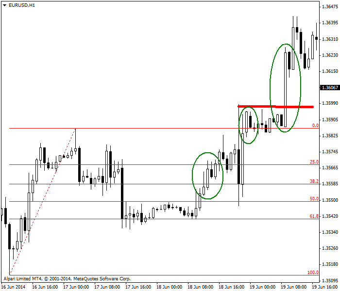
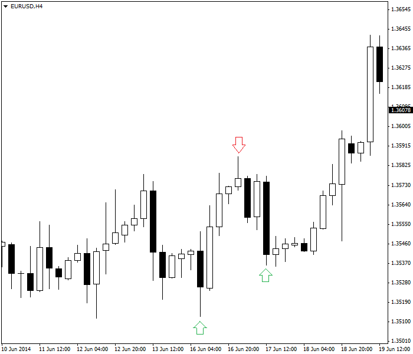

<!DOCTYPE html>
<html>
</html>
<head>
  <meta charset="utf-8">
  <meta http-equiv="X-UA-Compatible" content="IE=edge">
  <title>外汇站（fx-z.com） - 短期交易</title>
  <meta name="description" content="">
  <meta name="viewport" content="width=device-width, initial-scale=1">
  <meta name="robots" content="all,follow">
  <!-- Bootstrap CSS-->
  <link rel="stylesheet" href="vendor/bootstrap/css/bootstrap.min.css">
  <!-- Font Awesome CSS-->
  <link rel="stylesheet" href="vendor/font-awesome/css/font-awesome.min.css">
  <!-- Google fonts - Roboto-->
  <link rel="stylesheet" href="https://fonts.googleapis.com/css?family=Roboto:400,300,700,400italic">
  <!-- owl carousel-->
  <link rel="stylesheet" href="vendor/owl.carousel/assets/owl.carousel.css">
  <link rel="stylesheet" href="vendor/owl.carousel/assets/owl.theme.default.css">
  <!-- theme stylesheet-->
  <link rel="stylesheet" href="css/style.default.css" id="theme-stylesheet">
  <!-- Custom stylesheet - for your changes-->
  <link rel="stylesheet" href="css/custom.css">
  <!-- Favicon-->
  <link rel="shortcut icon" href="img/favicon.png">
  <!-- Tweaks for older IEs--><!--[if lt IE 9]>
    <script src="https://oss.maxcdn.com/html5shiv/3.7.3/html5shiv.min.js"></script>
    <script src="https://oss.maxcdn.com/respond/1.4.2/respond.min.js"></script><![endif]-->
</head>
<body>
  <div id="all">
    <div class="container-fluid">
      <div class="row row-offcanvas row-offcanvas-left"> 
        <!--   *** SIDEBAR ***-->
        <div id="sidebar" class="col-md-4 col-lg-3 sidebar-offcanvas">
          <div class="sidebar-content">
            <h1 class="sidebar-heading"> <a href="https://fx-z.com">fx-z.com</a></h1>
            <p class="sidebar-p">介绍外汇相关的基本知识，告诉您如何进行自己的技术面和基本面分析，讲解先进的交易理念，并且为您阐述失败交易者与专业交易者之间的真正区别。 </p>
            <p class="sidebar-p">通过这些课程的学习，您将学会如何根据自己的优势来应用情绪分析，还将了解真实世界的事件会对货币汇率产生什么影响，央行在外汇市场中所发挥的作用，以及交易者在颇受欢迎的即期外汇交易中有哪些选择方案。 </p>
            <ul class="sidebar-menu">
                <!-- Link-->
                <li class="sidebar-item"><a href="https://fx-z.com" class="sidebar-link">首页</a></li>
                <!-- Link-->
                <li class="sidebar-item"><a href="cihui.html" class="sidebar-link">外汇词汇</a></li>
                <!-- Link-->
                <li class="sidebar-item"><a href="ebook.html" class="sidebar-link">获取外汇电子书</a></li>
            </ul>
            <p class="social"><a href="https://www.forextimechina.com.cn/zh?form=IZIN" target="_blank"data-animate-hover="pulse" class="external facebook"><i class="fa fa-eur"></i></a><a href="https://www.forextimechina.com.cn/zh?form=IZIN" target="_blank" data-animate-hover="pulse" class="external gplus"><i class="fa fa-gbp"></i></a><a href="https://www.forextimechina.com.cn/zh?form=IZIN" target="_blank" data-animate-hover="pulse" class="external twitter"><i class="fa fa-rmb"></i></a><a href="https://www.forextimechina.com.cn/zh?form=IZIN" target="_blank" title="" class="external instagram"><i class="fa fa-dollar"></i></a><a href="https://www.forextimechina.com.cn/zh?form=IZIN" target="_blank" data-animate-hover="pulse" class="email"><i class="fa fa-money"></i></a></p>
            <div class="copyright text-center text-md-left">
             
              
            </div>
          </div>
        </div>
        <!--   *** SIDEBAR END ***  -->
        <!--   *** DETAIL ***-->
        <div class="col-md-8 col-lg-9 content-column white-background">
          <div class="small-navbar d-flex d-md-none">
            <button type="button" data-toggle="offcanvas" class="btn btn-outline-primary"> <i class="fa fa-align-left mr-2"></i>菜单</button>
            <h1 class="small-navbar-heading"> <a href="https://fx-z.com/10-3.html">下一篇 </a></h1>
          </div>
          <div class="row">
            <div class="col-xl-10">
              <div class="content-column-content">
                <h1>短期交易</h1>
    <p>
    “短期”的含义是因人而异的，但外汇中，“短期”是指周期低于一天的交易。它们通常发生于单个交易时段内（例如伦敦/欧洲或纽约），且单个交易时段大约持续 6-8 个小时。为了进一步将“短期”缩短，我们希望采用持有期从 240 分钟（4 小时）到 1 小时、15 分钟甚至是 5 分钟的交易。
</p>
<p>
    短期交易的优势是，当您退出市场后，您不用承担任何风险。如果您的交易频率为每天两次，且持有期仅持续数小时，则您的本金几乎一直安全无虞。而且，仅投入少许时间即可让您在一天的剩余时间内远离市场。离场之后，短期交易者无需被束缚在电脑屏幕前。短期时间周期的缺点在于，交易者可能害怕错失机会，从而鲁莽操作或者在证据不足的情况下操作。
</p>
<p>
    大多数短期交易者基于特定图表配置/形态和指标的“设定”交易，而不是跟随趋势。实际上，有些交易者并不想了解主要趋势，以免这些趋势干扰他们的思维，而有些交易者仅根据主要趋势的方向交易，因为这是一种风险更低的途径。这并非总是如此，因为即使表现最佳的主要趋势也会经历回落。但俗话说，即使一个停摆的钟一天也会对上两次，长期按照主要趋势的方向交易更有可能取得成功。
</p>
<p>
    最著名的短期交易策略由 Toby Crabel 于《Day Trading with Short-Term Price Patterns and Opening Range Breakout》（1990 年）一书中提出。该书已经脱销，且网上售价高达 $950。以前，该书的二手版价格一度高达 $3,000。开盘区间突破是指当三项因素同时保持一致时的买入指令：
</p>
<p>
    开盘价从前一个时段的收盘价开始跳空。
</p>
<p>
    开盘曲线之后出现了内包日线或十字星，这表明市场情绪已发生变化。
</p>
<p>
    开盘区间在过去 3-10 天内收窄。
</p>
<p>
    开盘区间理念适用于开盘价、收盘价均非常明显的证券。这与外汇不同，因为在外汇市场中，纽约开盘价可以为 EST 8:00 至 9:00 之间的任意时间，而收盘价可以为 EST 16:00 至 18:00 之间的任意时间。数据服务将 17:59 作为收盘价，但实际上，当时所有人都已回家。这并不意味着，开盘区间突破技术不适用于外汇，而只是因为其缺口非常少。唯一的真正收盘价为纽约周五收盘价，而唯一的真正“开盘价”为周日下午开盘价，虽然当亚洲市场交棒给欧洲市场后，我们有时会见到类似缺口的价格变化。问题不在于外汇缺口非常稀少，而在于出现缺口时，它始终非常重要——不过并非总是 Crabel 的开盘缺口模式。
</p>
<p>
    其他设定短期交易的重要人物包括 Linda Raschke 和 Larry Connors；他们是《Street Smarts》（街头智慧）（1996 年）一书的作者。截至 2016 年，该书依然在版。这些作者制定了一些不同的策略，其中一些策略的名字新巧可爱，被称为“弹球”或“盘簧”，但它们的价值在于识别形态的理念。这并没有看上去那么难。例如，Raschke 的“波段交易”规则非常适合外汇 4 小时时间周期；它的原理是以新低点买入，以新高点卖出。这正是在过去的高点和低点绘制水平线并且预期价格再次接近这些线时将出现逆转的优势之一。
</p>
<p>
    短期交易的第三项资源为 Larry Pesavento 和 Leslie Jouflas 于 2007 年出版的《Trade What You See：How to Profit from Pattern Recognition》（见解交易:如何从形态认识中获利 ）。这本书重点介绍首次由 Gartley 于 1936 年提出的 ABCD 和谐形态。无论您如何看待斐波那契数字，无论外汇价格中是否有表现自己的隐藏指令，无可否认的是，短期图表——尤其是日线图上的外汇回调通常会遵守 50% 和 62% “规则”。这或许是一项被众多交易者相信并将引起自我实现预言的功能。
</p>
<p>
    以下图表示例显示 EUR/USD 每小时图表。首先，价格从低点升至高点，然后向下回调，且幅度略大于 61.8%。您发现价格跌势已耗尽。如果您无法卖出，则您必须买入。当价格回升至 50% 回调位（第一个椭圆）时，您获得第一次买入机会。当价格越过前一个最高点（第二个椭圆）时，您获得另一次买入机会；当价格越过最新的最高点（红色水平线）时，您获得第三次买入机会。价格序列在第一、二个椭圆之间遇到一次令人意外且颇感不快的大幅回落，这说明没有哪种形态是完美的，它们总能在您的形态识别过程中浇上一盆冷水。它还应该提醒您，形态也许能告诉您何时买入，但它几乎从不告诉您何时卖出。在每小时交易周期上，您会发现一直移动止损是很难的，更实用的交易管理方法是使用固定的止损位和目标位。
</p>
<p>
     基于斐波那契回调和近期高点突破的买入机会
</p>
<p>
    请注意，另一种根据此图表交易的方式是使用 4 小时图表版本。采用 Raschke 的规则——在新低点买入、在新高点卖出将带来盈利，或许还会减小压力：
</p>
<p>
     在新低点买入，在新高点卖出，然后重新在新低点买入。
</p>
<p>
    短期交易没有单一的正确方式。各种方式都能发挥同样的效果——只要您能识别形态，清晰地了解它的进展，并且通过您的交易计划在适当的位置入场和离场以获得收益。请记住，在 1 分钟或 5 分钟图表上，形态的可靠度会大幅下降。
</p>
<p>
    <br/>
</p>
<p>
    <br/>
</p>
              </div>
            </div>
          </div>
        </div>
      </div>
    </div>
  </div>
  <!-- JavaScript files-->
  <script src="vendor/jquery/jquery.min.js"></script>
  <script src="vendor/popper.js/umd/popper.min.js"> </script>
  <script src="vendor/bootstrap/js/bootstrap.min.js"></script>
  <script src="vendor/jquery.cookie/jquery.cookie.js"> </script>
  <script src="vendor/owl.carousel/owl.carousel.min.js"></script>
  <script src="vendor/masonry-layout/masonry.pkgd.min.js"></script>
  <script src="js/front.js"></script>
</body>